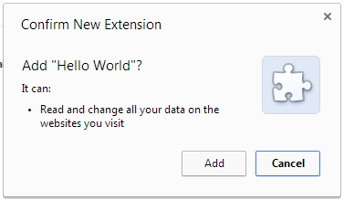
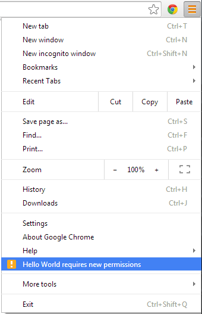
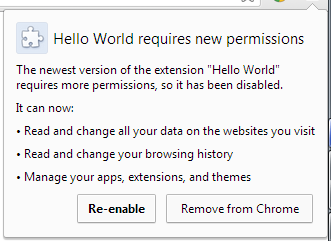
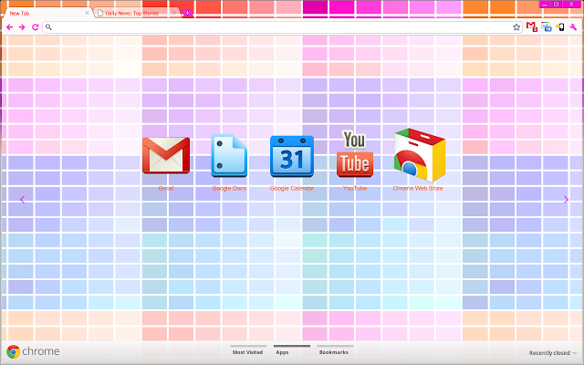

Created by Mikalai Ausiannikau
Extensions are small software programs that can modify and enhance the functionality of the browser.
The manifest file, called manifest.json, gives information about the extension, such as the most important files and the capabilities that the extension might use
{
// Required
"manifest_version": 2,
"name": "My Extension",
"version": "versionString",
// Recommended
"default_locale": "en", // must be absent if no _locales directory
"description": "A plain text",
"icons": {
"16": "icon16.png",
"48": "icon48.png",
"128": "icon128.png"
},
...
}
manifest_version name version default_locale description icons browser_action page_action author automation background chrome_settings_overrides chrome_ui_overrides chrome_url_overrides commands content_pack content_scripts content_security_policy converted_from_user_script current_locale devtools_page externally_connectable homepage_url import incognito input_components key minimum_chrome_version nacl_modules oauth2 offline_enabled omnibox optional_permissions options_page options_ui permissions platforms plugins requirements sandbox script_badge short_name signature spellcheck storage system_indicator tts_engine update_url web_accessible_resources
In addition to having access to all the APIs that web pages and apps can use, extensions can also use Chrome-only APIs (often called chrome.* APIs) that allow tight integration with the browser.
accessibilityFeatures alarms bookmarks browserAction browsingData commands contentSettings contextMenus cookies debugger declarativeContent desktopCapture devtools.inspectedWindow devtools.network devtools.panels downloads enterprise.platformKeys events extension extensionTypes fontSettings gcm history i18n identity idle input.ime management notifications omnibox pageAction pageCapture permissions power privacy proxy pushMessaging runtime sessions storage system.cpu system.memory system.storage tabCapture tabs topSites tts ttsEngine types webNavigation webRequest webstore windows
declarativeWebRequest
automation fileSystemProvider infobars location processes signedInDevices
experimental.devtools.audits experimental.devtools.console
Invisible page that holds the main logic of the extension.
{
...
"background": {
"scripts": ["background.js"]
},
...
}
or
{
...
"background": {
"page": "background.html"
},
...
}
{
...
"background": {
"persistent": false,
// "true" (by default) - Persistent Background Page
// "false" - Event Page
...
},
...
}
If you need the browser to start up background page early
{
...
"permissions": [ "background" ]
...
}
It is some JavaScript that executes in the context of a page that's been loaded into the browser to interact with this page.
{
...
"content_scripts": [{
"matches": ["http://www.google.com/*"], // Required.
"css": ["mystyles.css"], // Optional.
"js": ["jquery.js", "myscript.js"], // Optional.
// Optional. "document_start", "document_end", "document_idle".
"run_at": "document_idle"
}]
}
Content scripts are executed in a special environment called an isolated world. They have access to the DOM of the page they are injected into, but not to any JavaScript variables or functions created by the page.
{
...
"browser_action": {
"default_title": "title",
"default_icon": {
"19": "images/icon19.png",
"38": "images/icon38.png"
},
"default_popup": "popup.html"
}
}
{
...
"page_action": {
"default_title": "title",
"default_icon": {
"19": "images/icon19.png",
"38": "images/icon38.png"
},
"default_popup": "popup.html"
}
}
chrome.browserAction.set[get]Title(object details[, function callback]);
chrome.browserAction.set[get]BadgeText(object details[, function callback]);
chrome.browserAction.set[get]BadgeBackgroundColor(object details[, function callback]);
chrome.browserAction.set[get]Popup(object details[, function callback]);
chrome.browserAction.enable[disable](integer tabId);
chrome.browserAction.setIcon(object details);
chrome.browserAction.onClicked.addListener(function(tab) {...});
chrome.pageAction.set[get]Title(object details[, function callback]);
chrome.pageAction.set[get]Popup(object details[, function callback]);
chrome.pageAction.show[hide](integer tabId);
chrome.pageAction.setIcon(object details);
chrome.pageAction.onClicked.addListener(function(tab) {...});
The extension pages can make direct function calls to each other since all of them are executed in same process on the same thread.
// returns the JavaScript 'window' object for the background page
// running inside the current extension
var bgp = chrome.extension.getBackgroundPage();
// returns an array of the JavaScript 'window' objects for each of the pages
// running inside the current extension
var views = chrome.extension.getViews({ type: "popup" });
Once a page has a reference to other pages within the extension, the first page can invoke functions on the other pages, and it can manipulate their DOMs.
// If the background page is an event page,
// the system will ensure it is loaded before calling the callback.
// If there is no background page, an error is set.
chrome.runtime.getBackgroundPage(function(Window backgroundPage) {...});
// Send a request from a content script:
chrome.runtime.sendMessage({greeting: "hello"}, function(response) { });
// Send a request from background page to a content script:
chrome.tabs.sendMessage(tabId, {greeting: "hello"}, function(response) { });
// Listener to handle the message from both a content script / background page
chrome.runtime.onMessage.addListener(function(request, sender, sendResponseFn) { });
// connect inside extension page
var port = chrome.runtime.connect({ name: "any_name" });
// connect inside content script
var port = chrome.tabs.connect(tabId: "tabId_value", { name: "any_name" })
// handle incoming connections inside both extension page and content script
chrome.runtime.onConnect.addListener(function(port) { });
// manually call disconnect
port.disconnect();
port.onDisconnect.addListener(function() { });
// send and receive messages
port.postMessage({ greeting: "hello" });
port.onMessage.addListener(function(msg) { });
// connect to another extension providing its extension ID
var port = chrome.runtime.connect(extensionId, { name: "any_name" });
// handle external incoming connections
chrome.runtime.onConnectExternal.addListener(function(port) { });
// send and receive messages for long-lived connections
port.postMessage({ greeting: "hello" });
port.onMessage.addListener(function(msg) { });
// For simple requests:
chrome.runtime.sendMessage(extensionId, {greeting: hello},
function(response) {});
chrome.runtime.onMessageExternal.addListener(
function(request, sender, sendResponse) {
});
{
"externally_connectable": {
// The IDs of extensions or apps that are allowed to connect.
// The wildcard "*" will allow all extensions and apps to connect.
"ids": [
"*"
],
// The URL patterns for web pages that are allowed to connect.
// If left empty or unspecified, no web pages can connect.
// The URL pattern must contain at least a second-level domain.
"matches": [ "*://*.google.com/*"]
}
}
If there is no externally_connectable, all extensions and apps can connect, but no webpages can connect.
If you use externally_connectable and "ids": ["*"] is not specified then other extensions will lose the ability to connect to it.
CSP introduces some fairly strict policies that will make extensions more secure by default, and provides you with the ability to create and enforce rules governing the types of content that can be loaded and executed by your extensions and applications.
{
...,
"content_security_policy": "[POLICY STRING GOES HERE]"
...
}
{
...,
"content_security_policy": "script-src 'self'; object-src 'self'"
...
}
CSP applies to the background pages and event pages of the extension.
// Remote Script
"content_security_policy": "script-src 'self' https://example.com; object-src 'self'"
// Evaluated JavaScript
"content_security_policy": "script-src 'self' 'unsafe-eval'; object-src 'self'"
To use most chrome.* APIs and extension capabilities, your extension must declare its intent in the manifest, often in the "permissions" field.
Some of these declarations result in a warning when a user installs or autoupdate your extension.

{
...
"permissions": [ "webRequest" ],
"optional_permissions": [ "tabs" ],
...
}
When the extension autoupdates, the increased permissions cause the extension to be disabled until the user re-enables it.
 
chrome.permissions.contains({
permissions: ['tabs']
}, function(result) {
// The callback argument will be true if the extension has the permissions.
});
you can also get an array of all granted permissions
chrome.permissions.getAll(function(permissions) {
// The callback argument will be true if the extension has the permissions.
})
chrome.permissions.request({
permissions: ['tabs']
}, function(granted) {
// The callback argument will be true if the user granted the permissions.
});
IMPORTANT: Permissions must be requested from inside a user gesture, like a button's click handler.
A theme is a special kind of extension that changes the way the browser looks. Themes are packaged like regular extensions, but they don't contain JavaScript or HTML code.

{
"theme": {
"images" : {
"theme_frame" : "images/theme_frame_camo.png",
"theme_frame_overlay" : "images/theme_frame_stripe.png",
"theme_toolbar" : "images/theme_toolbar_camo.png",
"theme_ntp_background" : "images/theme_ntp_background_norepeat.png",
"theme_ntp_attribution" : "images/attribution.png"
},
"colors" : {
"frame" : [71, 105, 91],
"toolbar" : [207, 221, 192],
"ntp_text" : [20, 40, 0],
"ntp_link" : [36, 70, 0],
"ntp_section" : [207, 221, 192],
"button_background" : [255, 255, 255]
},
"tints" : {
"buttons" : [0.33, 0.5, 0.47]
},
"properties" : {
"ntp_background_alignment" : "bottom"
}
}
}
Extensions are packaged as signed ZIP files with the file extension ".crx".
When you package an extension, the extension is assigned a unique key pair. The extension's ID is based on a hash of the public key. The private key is used to sign each version of the extension and must be secured from public access.
Via Chrome Extensions tab:
Via command line:
chrome.exe --pack-extension=C:\myext --pack-extension-key=C:\myext.pem
The browser makes a request to that URL looking for an update manifest XML file every few hours. The newer version of the extension is downloaded and installed automatically.
{
"name": "My extension",
...
"update_url": "http://myhost.com/myext.xml",
...
}
Automatically by browser
chrome.exe --extensions-update-frequency=45
Programmatically
chrome.runtime.requestUpdateCheck(function(status, details) {
if (status == "update_available") {
console.log("update pending...");
} else if (status == "no_update") {
console.log("no update found");
} else if (status == "throttled") {
console.log("Oops, I'm asking too frequently.");
}
});